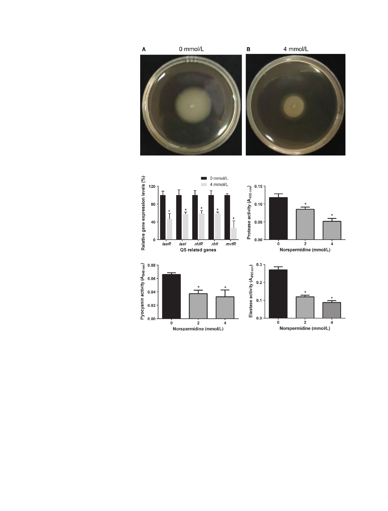

L. Qu et al.
Effects of Norspermidine on P. aeruginosa Biofilm
Figure 5. Photographs of plates showing
inhibition of swimming motility of standard
strain PAO1 in the presence of norspermidine
(4 mmol/L).
A
B
Figure 6. Norspermidne restrains the
expression of QS-related genes and
production of virulence factors. (A) PAO1 was C
D
cultured and treated with 0 or 4 mmol/L
norspermidine and qRT-P CR analysis was
performed as described in the Materials and
Methods section. Activities of virulence
factors including (B) protease activity, (C)
pyocyanin, and (D) elastase activity at
different concentrations of norspermidine
(0, 2, and 4 mmol/L) were analyzed.*P < 0.05
versus untreated control, and error bars
indicate SD.
gonorrhoeae, B. subtilis, E. coli, S. aureus, S. epidermidis,
and even mixed culture (McGinnis et al. 2009; Böttcher
et al. 2013; Ramón-P eréz et al. 2015; Goytia et al. 2013;
Si et al. 2015), although higher concentrations of norsper-
midine were required in our experiment. Furthermore, to
our knowledge, there are no studies demonstrating the
disassembly on biofilms of PAO1 and P. aeruginosa clinical
isolates by norspermidine and its potential effect on bacte-
rial adherence and QS-related genes (rhlI/R, lasI/R, and
mvfR) expression and QS-related virulence factors (pyo-
cyanin, elastase activity, and protease activity). Therefore,
this is the first work that highlights this effect.
Norspermidine could interact directly with the extracel-
lular polysaccharide through binding to the functional
group C-O-C . Furthermore, norspermidine could increase
cell surface-negative charge, decrease cell hydrophobicity
(Si et al. 2014), and these features could contribute to
the disassembly of biofilms.
In addition, biofilm formation by P. aeruginosa was
also inhibited by treatment with norspermidine cultured
both on polystyrene slide covers and on surface of catheter
pieces (Fig. 3A). Many studies reported that norspermidine
did not inhibit cell growth even at millimolar concentra-
tions (Rasamiravaka et al. 2015), but our results showed
that growth of P. aeruginosa was suppressed by treatment
with high concentration of norspermidine (Fig. 1A). The
bacterial counting assay also showed that norspermidine
has an antibactericidal effect against P. aeruginosa (Fig. 1B).
This may be due to differences between the strains tested.
The variation in levels of clinical isolates sensitivity to
© 2016 The Authors. MicrobiologyOpen published by John Wiley & Sons Ltd.
409